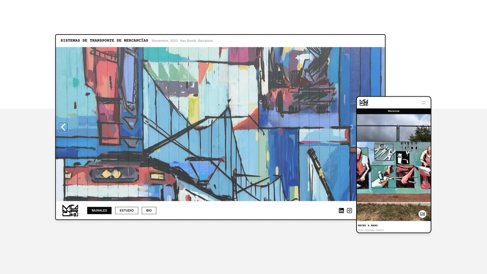
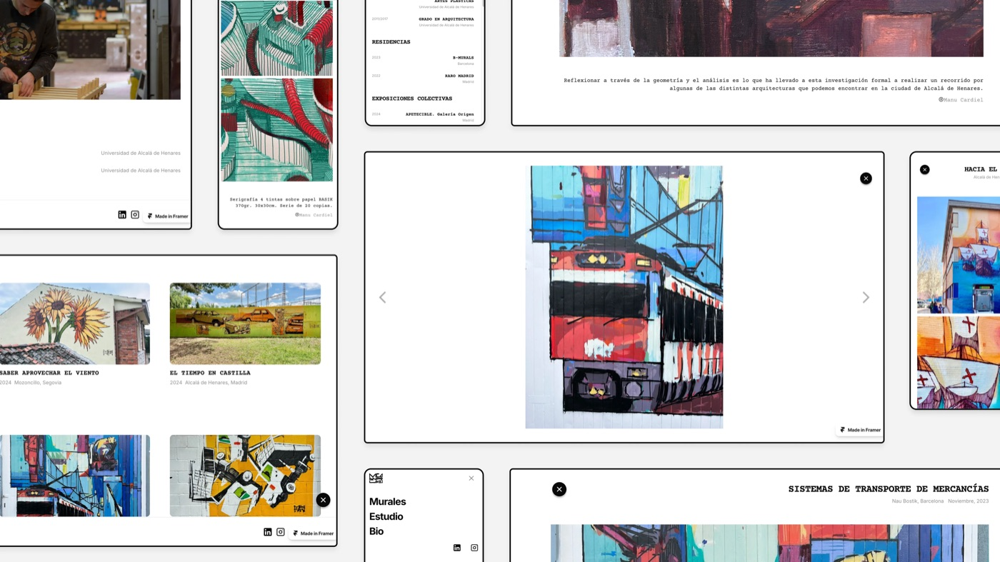
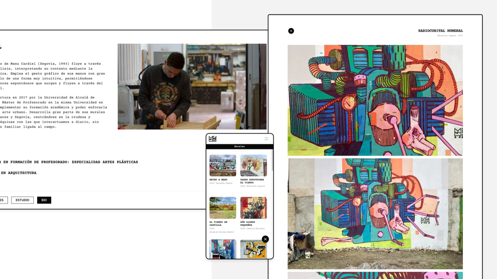
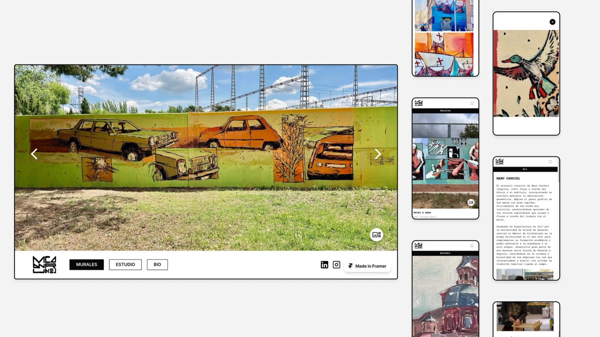

↳ Contexto
La web anterior de Manu, desarrollada por el Gobierno de España bajo la iniciativa "Kit Digital", se volvió demasiado cara de mantener en 2024. Además, su diseño gráfico no encajaba con la visión de Manu como artista. El reto era rediseñar su presencia online, ofreciendo una solución que reflejara su identidad artística garantizando usabilidad, facilidad de gestión de contenido y sostenibilidad a largo plazo.

↳ Ejecución
Trabajamos codo con codo mediante una serie de entrevistas para entender la visión de Manu para la web, iterando propuestas de diseño desde el canvas hasta la implementación final en Framer. Guié a Manu en catalogar su obra y desarrollar un sistema para gestionar el contenido vía CMS, garantizando que pudiera mantener y actualizar la web de forma independiente. Uno de los retos clave fue hacer la web responsive para móvil, ya que la versión anterior carecía de esa funcionalidad. Tras pruebas exhaustivas, logramos una solución eficiente que mostraba el trabajo de Manu de forma excelente en todos los dispositivos.


↳ Resultado
El resultado final es una web elegante y responsive que representa a la perfección la visión artística de Manu, ofreciéndole plena autonomía para gestionar el contenido. La versión móvil está totalmente optimizada, ofreciendo una experiencia fluida a quienes la visitan desde cualquier dispositivo. Gracias a este diseño, Manu cuenta ahora con una plataforma económica y mantenible que muestra su trabajo y le permite gestionar y actualizar su portfolio con facilidad.

Siguiente proyectoAdrenaline →